공조냉동기계기사(구) (2019-03-03 기출문제)
1과목: 기계열역학
1. 다음 중 강도성 상태량(Intensive property)이 아닌 것은?
- 온도
- 압력
- 체적
- 밀도
(정답률: 71%)

2. 다음 중 기체상수(gas constant, R[kJ/(kg·K)])값이 가장 큰 기체는?
- 산소(O2)
- 수소(H2)
- 일산화탄소(CO)
- 이산화탄소(CO2)
(정답률: 65%)
3. 실린더에 밀폐된 8kg의 공기가 그림과 같이 P1 = 800 kPa, 체적 V1 = 0.27 m3에서 P2 = 350 kPa, 체적 V2 = 0.80 m3으로 직선 변화하였다. 이 과정에서 공기가 한 일은 약 몇 kJ 인가?
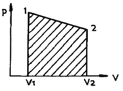
- 3⑤
- 334
- 362
- 390
(정답률: 62%)
4. 이상기체에 대한 다음 관계식 중 잘못된 것은? (단, Cv는 정적비열, Cp는 정압비열, u는 내부에너지, T는 온도, V는 부피, h는 엔탈피, R은 기체상수, k는 비열비이다.)
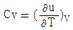
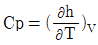
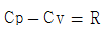
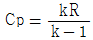
(정답률: 54%)
5. 이상기체 1kg이 초기에 압력 2 kPa, 부피 0.1 m3를 차지하고 있다. 가역등온과정에 따라 부피가 0.3 m3로 변화했을 때 기체가 한 일은 약 몇 J인가?
- 9540
- 2200
- 954
- 220
(정답률: 57%)
6. 시간당 380000 kg의 물을 공급하여 수증기를 생산하는 보일러가 있다. 이 보일러에 공급하는 물의 엔탈피는 830 kJ/kg이고, 생산되는 수증기의 엔탈피는 3230 kJ/kg이라고 할 때, 발열량이 32000 kJ/kg인 석탄을 시간당 34000 kg씩 보일러에 공급한다면 이 보일러의 효율은 약 몇 %인가?
- 66.9 %
- 71.5 %
- 77.3 %
- 83.8 %
(정답률: 60%)
7. 600 kPa, 300 K 상태의 이상기체 1 kmol이 엔탈피가 등온과정을 거쳐 압력이 200 kPa로 변했다. 이 과정동안의 엔트로피 변화량은 약 몇 kJ/K 인가? (단, 일반기체상수(
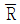
)은 8.31451 kJ/(kmol·K) 이다.)- 0.782
- 6.31
- 9.13
- 18.6
(정답률: 52%)
8. 계의 엔트로피 변화에 대한 열역학적 관계식 중 옳은 것은? (단, T는 온도, S는 엔트로피, U는 내부에너지, V는 체적, P는 압력, H는 엔탈피를 나타낸다.)
- TdS = dU - PdV
- TdS = dH - PdV
- TdS = dU - VdP
- TdS = dH – VdP
(정답률: 45%)
9. 그림과 같은 단열된 용기 안에 25℃의 물이 0.8m3 들어있다. 이 용기 안에 100℃, 50kg의 쇳덩어리를 넣은 후 열적 평형이 이루어 졌을 때 최종 온도는 약 몇 ℃ 인가? (단, 물의 비열은 4.18 kJ/(kg·K), 철의 비열은 0.45 kJ/(kg·K) 이다.)
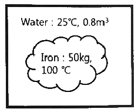
- 25.5
- 27.4
- 29.2
- 31.4
(정답률: 47%)
10. 이상적인 오토사이클에서 열효율을 55%로 하려면 압축비를 약 얼마로 하면 되겠는가? (단, 기체의 비열비는 1.4 이다.)
- 5.9
- 6.8
- 7.4
- 8.5
(정답률: 64%)
11. 터빈, 압축기, 노즐과 같은 정상 유동장치의 해석에 유용한 몰리에(Mollier) 선도를 옳게 설명한 것은?
- 가로축에 엔트로피, 세로축에 엔탈피를 나타내는 선도이다.
- 가로축에 엔탈피, 세로축에 온도를 나타내는 선도이다.
- 가로축에 엔트로피, 세로축에 밀도를 나타내는 선도이다.
- 가로축에 비체적, 세로축에 압력를 나타내는 선도이다.
(정답률: 52%)
12. 압력 2 MPa, 300℃의 공기 0.3kg이 폴리트로픽 과정으로 팽창하여, 압력이 0.5 MPa로 변화하였다. 이때 공기가 한 일은 약 몇 kJ인가? (단, 공기는 기체상수가 0.287 kJ/(kg·K)인 이상기체이고, 폴리트로픽 지수는 1.3 이다.)
- 416
- 157
- 573
- 45
(정답률: 39%)
13. 어떤 기체 동력장치가 이상적인 브레이턴 사이클로 다음과 같이 작동할 때 이 사이클의 열효율은 약 몇 % 인가? (단, 온도(T) - 엔트로피(s) 선도에서 T1 = 30℃, T2 = 200℃, T3 = 1060℃, T4 = 160℃ 이다.)
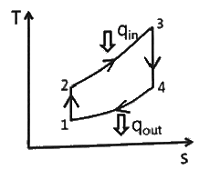
- 81%
- 85%
- 89%
- 92%
(정답률: 55%)
14. 체적이 일정하고 단열된 용기 내에 80℃, 320 kPa의 헬륨 2kg이 들어 있다. 용기 내에 있는 회전날개가 20W 의 동력으로 30분 동안 회전한다고 할 때 용기 내의 최종 온도는 약 몇 ℃ 인가? (단, 헬륨의 정적비열은 3.12 kJ/(kg·K) 이다.)
- 81.9℃
- 83.3℃
- 84.9℃
- 85.8℃
(정답률: 46%)
15. 유리창을 통해 실내에서 실외로 열전달이 일어난다. 이때 열전달량은 약 몇 W 인가? (단, 대류열전달계수는 50W(m2·K), 유리창 표면온도는 25℃, 외기온도는 10℃, 유리창면적은 2m2 이다.)
- 150
- 500
- 1500
- 5000
(정답률: 65%)
16. 열역학 제2법칙에 관해서는 여러 가지 표현으로 나타낼 수 있는데, 다음 중 열역학 제2법칙과 관계되는 설명으로 볼 수 없는 것은?
- 열을 일로 변환하는 것은 불가능하다.
- 열효율이 100%인 열기관을 만들 수 없다.
- 열은 저온 물체로부터 고온 물체로 자연적으로 전달되지 않는다.
- 입력되는 일 없이 작동하는 냉동기를 만들 수 없다.
(정답률: 61%)
17. 그림과 같은 Rankine 사이클로 작동하는 터빈에서 발생하는 일은 약 몇 kJ/kg 인가? (단, h는 엔탈피, s는 엔트로피를 나타내며, h1 = 191.8 kJ/kg, h2 = 193.8 kJ/kg, h3 = 2799.5 kJ/kg, h4 = 2007.5 kJ/kg 이다.)
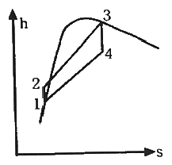
- 2.0 kJ/kg
- 792.0 kJ/kg
- 26⑤.7 kJ/kg
- 1815.7 kJ/kg
(정답률: 57%)
18. 어느 내연기관에서 피스톤의 흡기과정으로 실린더 속에 0.2 kg의 기체가 들어 왔다. 이것을 압축할 때 15 kJ의 일이 필요하였고, 10 kJ의 열을 방출하였다고 한다면, 이 기체 1 kg당 내부에너지의 증가량은?
- 10 kJ/kg
- 25 kJ/kg
- 35 kJ/kg
- 50 kJ/kg
(정답률: 66%)
19. 공기 1kg이 압력 50kPa, 부피 3m3인 상태에서 압력 900kPa, 부피 0.5m3인 상태로 변화할 때 내부 에너지가 160kJ 증가하였다. 이 때 엔탈피는 약 몇 kJ이 증가하였는가?
- 30
- 185
- 235
- 460
(정답률: 54%)
20. 밀폐계가 가역정압 변화를 할 때 계가 받은 열량은?
- 계의 엔탈피 변화량과 같다.
- 계의 내부에너지 변화량과 같다.
- 계의 엔트로피 변화량과 같다.
- 계가 주위에 대해 한 일과 같다.
(정답률: 46%)
2과목: 냉동공학
21. 단위에 대한 설명으로 틀린 것은?
- 토리첼리의 실험결과 수은주의 높이가 68cm일 때, 실험장소에서의 대기압은 1.2 atm이다.
- 비체적이 0.5m3/kg인 암모니아 증기 1m3의 질량은 2.0kg이다.
- 압력 760 mmHg는 1.01 bar 이다.
- 작업대 위에 놓여진 밑면적이 2.4m2인 가공물의 무게가 24kgf라면 작업대의 가해지는 압력은 98 Pa 이다.
(정답률: 57%)
22. 대기압에서 암모니아액 1kg을 증발시킨 열량은 0℃ 얼음 몇 kg을 융해시킨 것과 유사한가?
- 2.1
- 3.1
- 4.1
- 5.1
(정답률: 42%)
23. 제빙능력은 원료수 온도 및 브라인 온도 등 조건에 따라 다르다. 다음 중 제빙에 필요한 냉동능력을 구하는데 필요한 항목으로 가장 거리가 먼 것은?
- 온도 tw℃인 제빙용 원수를 0℃까지 냉각하는데 필요한 열량
- 물의 동결 잠열에 대한 열량(79.68kcal/kg)
- 제빙장치내의 발생열과 제빙용 원수의 수질상태
- 브라인 온도 t1℃ 부근까지 얼음을 냉각하는데 필요한 열량
(정답률: 67%)
24. 염화나트륨 브라인을 사용한 식품냉장용 냉동장치에서 브라인의 순환량이 220L/min이며, 냉각관 입구의 브라인 온도가 –5℃, 출구의 브라인온도가 –9℃라면 이 브라인 쿨러의 냉동능력(kcal/h)은? (단, 브라인의 비열은 0.75 kcal/kg·℃, 비중은 1.15 이다.)
- 759
- 45540
- 60720
- 1480⑤
(정답률: 59%)
25. 암모니아와 프레온 냉매의 비교 설명으로 틀린 것은? (단, 동일 조건을 기준으로 한다.)
- 암모니아가 R-13 보다 비등점이 높다.
- R-22는 암모니아보다 냉동효과(kcal/kg)가 크고 안전하다.
- R-13은 R-22에 비하여 저온용으로 적합하다.
- 암모니아는 R-22에 비하여 유분리가 용이하다.
(정답률: 49%)
26. 25℃ 원수 1ton을 1일 동안에 –9℃의 얼음으로 만드는데 필요한 냉동능력(RT)은? (단, 열손실은 없으며, 동결잠열 80 kcal/kg, 원수 비열 1 kcal/kg·℃, 얼음의 비열 0.5 kcal/kg·℃이며, 1RT는 3320 kcal/h로 한다.)
- 1.37
- 1.88
- 2.38
- 2.88
(정답률: 60%)
27. 전열면적이 20m2인 수냉식 응축기의 용량이 200 kW이다. 냉각수의 유량은 5kg/s 이고, 응축기 입구에서 냉각수 온도는 20℃ 이다. 열관류율이 800 W/m2·K 일 때, 응축기 내부 냉매의 온도(℃)는 얼마인가? (단, 온도차는 산술평균온도차를 이용하고, 물의 비열은 4.18 kJ/kg·K이며, 응축기 내부 냉매의 온도는 일정하다고 가정한다.)
- 36.5
- 37.3
- 38.1
- 38.9
(정답률: 41%)
28. 다음 중 증발기 출구와 압축기 흡입관 사이에 설치하는 저압측 부속장치는?
- 액분리기
- 수액기
- 건조기
- 유분리기
(정답률: 66%)
29. 다음 중 불응축 가스를 제거하는 가스퍼저(gas purger)의 설치 위치로 가장 적당한 것은?
- 수액기 상부
- 압축기 흡입부
- 유분리기 상부
- 액분리기 상부
(정답률: 55%)
30. 냉동장치에서 흡입압력 조정밸브는 어떤 경우를 방지하기 위해 설치하는가?
- 흡입압력이 설정 압력 이상으로 상승하는 경우
- 흡입압력이 일정한 경우
- 고압측 압력이 높은 경우
- 수액기의 액면이 높은 경우
(정답률: 75%)
31. 다음 응축기 중 동일조건하에 열관류율이 가장 낮은 응축기는 무엇인가?
- 쉘튜브식 응축기
- 증발식 응축기
- 공랭식 응축기
- 2중관식 응축기
(정답률: 69%)
32. 압축기 토출압력 상승 원인이 아닌 것은?
- 응축온도가 낮을 때
- 냉각수 온도가 높을 때
- 냉각수 양이 부족할 때
- 공기가 장치 내에 혼입되었을 때
(정답률: 59%)
33. 다음의 냉매 중 지구온난화지수(GWP)가 가장 낮은 것은?
- R1234yf
- R23
- R12
- R744
(정답률: 40%)
34. 축열시스템 방식에 대한 설명으로 틀린 것은?
- 수축열 방식 : 열용량이 큰 물을 축열재료로 이용하는 방식
- 빙축열 방식 : 냉열을 얼음에 저장하여 작은 체적에 효율적으로 냉열을 저장하는 방식
- 잠열축열 방식 : 물질의 융해 및 응고 시상변화에 따른 잠열을 이용하는 방식
- 토양축열 방식 : 심해의 해수온도 및 해양의 축열성을 이용하는 방식
(정답률: 69%)
35. 냉동장치의 냉동부하가 3냉동톤이며, 압축기의 소요동력이 20kW일 때 응축기에 사용되는 냉각수량(L/h)은? (단, 냉각수 입구온도는 15℃이고, 출구온도는 25℃ 이다.)
- 2716
- 2547
- 1530
- 600
(정답률: 47%)
36. 냉동기에서 동일한 냉동효과를 구현하기 위해 압축기가 작동하고 있다. 이 압축기의 클리어런스(극간)가 커질 때 나타나는 현상으로 틀린 것은?
- 윤활유가 열화된다.
- 체적효율이 저하한다.
- 냉동능력이 감소한다.
- 압축기의 소요동력이 감소한다.
(정답률: 69%)
37. 냉동장치의 운전 시 유의사항으로 틀린 것은?
- 펌프다운 시 저압측 압력은 대기압 정도로 한다.
- 압축기 가동 전에 냉각수 펌프를 기동시킨다.
- 장시간 정지시키는 경우에는 재가동을 위하여 배관 및 기기에 압력을 걸어둔 상태로 둔다.
- 장시간 정지 후 시동 시에는 누설여부를 점검한 후에 기동시킨다.
(정답률: 66%)
38. 냉동기, 열기관, 발전소, 화학플랜트 등에서의 뜨거운 배수를 주위의 공기와 직접 열교환시켜 냉각시키는 방식의 냉각탑은?
- 밀폐식 냉각탑
- 증발식 냉각탑
- 원심식 냉각탑
- 개방식 냉각탑
(정답률: 61%)
39. 제상방식에 대한 설명으로 틀린 것은?
- 살수방식은 저온의 냉장창고용 유니트 쿨러 등에서 많이 사용된다.
- 부동액 살포방식은 공기중의 수분이 부동액에 흡수되므로 일정한 농도 관리가 필요하다.
- 핫가스 제상방식은 응축기 출구의 고온의 액냉매를 이용한다.
- 전기히터방식은 냉각관 배열의 일부에 핀튜브 형태의 전기히터를 삽입하여 착상부를 가열한다.
(정답률: 63%)
40. 다음과 같은 냉동 사이클 중 성적계수가 가장 큰 사이클은 어느 것인가?
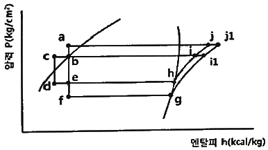
- b – e – h – i - b
- c – d – h – i - c
- b – f – g – i1 - b
- a – e – h – j – a
(정답률: 68%)
3과목: 공기조화
41. 다음 중 난방설비의 난방부하를 계산하는 방법 중 현열만을 고려하는 경우는?
- 환기 부하
- 외기 부하
- 전도에 의한 열 손실
- 침입 외기에 의한 난방 손실
(정답률: 54%)
42. 증기난방에 대한 설명으로 틀린 것은?
- 건식 환수시스템에서 환수관에는 증기가 유입되지 않도록 증기관과 환수관 사이에 증기트랩을 설치한다.
- 중력식 환수시스템에서 환수관은 선하향구배를 취해야 한다.
- 증기난방은 극장 같이 천장고가 높은 실내에 적합하다.
- 진공식 환수시스템에서 관경을 가늘게 할 수 있고 리프트 피팅을 사용하여 환수관 도중에서 입상시킬 수 있다.
(정답률: 58%)
43. 다음 중 냉방부하의 종류에 해당되지 않는 것은?
- 일사에 의해 실내로 들어오는 열
- 벽이나 지붕을 통해 실내로 들어오는 열
- 조명이나 인체와 같이 실내에서 발생하는 열
- 침입 외기를 가습하기 위한 열
(정답률: 52%)
44. 정방실에 35 kW의 모터에 의해 구동되는 정방기가 12대 있을 때 전력에 의한 취득 열량(kW)은? (단, 전동기와 이것에 의해 구동되는 기계가 같은 방에 있으며, 전동기의 가동율은 0.74 이고, 전동기 효율은 0.87, 전동기 부하율은 0.92 이다.)
- 483
- 420
- 357
- 329
(정답률: 40%)
45. 다음 중 축류 취출구의 종류가 아닌 것은?
- 펑커루버형 취출구
- 그릴형 취출구
- 라인형 취출구
- 팬형 취출구
(정답률: 55%)
46. 증기설비에 사용하는 증기 트랩 중 기계식 트랩의 종류로 바르게 조합한 것은?
- 버킷 트랩, 플로트 트랩
- 버킷 트랩, 벨로즈 트랩
- 바이메탈 트랩, 열동식 트랩
- 플로트 트랩, 열동식 트랩
(정답률: 54%)
47. 다음 중 공기조화설비의 계획 시 조닝을 하는 목적으로 가장 거리가 먼 것은?
- 효과적인 실내 환경의 유지
- 설비비의 경감
- 운전 가동면에서의 에너지 절약
- 부하 특성에 대한 대처
(정답률: 64%)
48. 공기조화방식 중 전공기 방식이 아닌 것은?
- 변풍량 단일덕트 방식
- 이중 덕트 방식
- 정풍량 단일덕트 방식
- 팬 코일 유닛 방식(덕트병용)
(정답률: 69%)
49. 덕트의 소음 방지대책에 해당 되지 않는 것은?
- 덕트의 도중에 흡음재를 부착한다.
- 송풍기 출구 부근에 플래넘 챔버를 장치한다.
- 댐퍼 입·출구에 흡음재를 부착한다.
- 덕트를 여러 개로 분기시킨다.
(정답률: 65%)
50. 건물의 콘크리트 벽체의 실내측에 단열재를 부착하여 실내측 표면에 결로가 생기지 않도록 하려 한다. 외기온도가 0℃, 실내온도가 20℃, 실내공기의 노점온도가 12℃, 콘크리트 두께가 100mm일 때, 결로를 막기 위한 단열재의 최소 두께(mm)는? (단, 콘크리트와 단열재의 접촉부분의 열저항은 무시한다.)
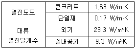
- 11.7
- 10.7
- 9.7
- 8.7
(정답률: 34%)
51. 이중덕트방식에 설치하는 혼합상자의 구비조건으로 틀린 것은?
- 냉풍·온풍 덕트내에 정압변도에 의해 송풍량이 예민하게 변화할 것
- 혼합비율 변동에 따른 송풍량의 변동이 완만할 것
- 냉풍·온풍 댐퍼의 공기누설이 적을 것
- 자동제어 신뢰도가 높고 소음발생이 적을 것
(정답률: 65%)
52. 저온공조방식에 관한 내용으로 가장 거리가 먼 것은?
- 배관지름의 감소
- 팬 동력 감소로 인한 운전비 절감
- 낮은 습도의 공기 공급으로 인한 쾌적성 향상
- 저온공기 공급으로 인한 급기 풍량 증가
(정답률: 48%)
53. 외기의 건구온도 32℃와 환기의 건구온도 24℃인 공기를 1 : 3(외기 : 환기)의 비율로 혼합하였다. 이 혼합공기의 온도는?
- 26℃
- 28℃
- 29℃
- 30℃
(정답률: 67%)
54. 취출구에서 수평으로 취출된 공기가 일정 거리만큼 진행된 뒤 기류 중심선과 취출구 중심과의 수직거리를 무엇이라고 하는가?
- 강하도
- 도달거리
- 취출온도차
- 셔터
(정답률: 50%)
55. 공조기 내에 엘리미네이터를 설치하는 이유로 가장 적절한 것은?
- 풍량을 줄여 풍속을 낮추기 위해서
- 공조기 내의 기류의 분포를 고르게 하기 위해
- 결로수가 비산되는 것을 방지하기 위해
- 먼지 및 이물질을 효율적으로 제거하기 위해
(정답률: 56%)
56. 공기조화방식에서 변풍량 단일덕트 방식의 특징에 대한 설명으로 틀린 것은?
- 송풍기의 풍량제어가 가능하므로 부분 부하시 반송에너지 소비량을 경감시킬 수 있다.
- 동시사용률을 고려하여 기기용량을 결정할 수 있으므로 설비용량이 커질 수 있다.
- 변풍량 유닛을 실 별 또는 존 별로 배치함으로써 개별제어 및 존 제어가 가능하다.
- 부하변동에 따라 실내온도를 유지하 수 있으므로 열원설비용 에너지 낭비가 적다.
(정답률: 55%)
57. 송풍 덕트 내의 정압제어가 필요 없고, 발생 소음이 적은 변풍량 유닛은?
- 유인형
- 슬롯형
- 바이패스형
- 노즐형
(정답률: 60%)
58. 다음 중 보온, 보냉, 방로의 목적으로 덕트 전체를 단열해야 하는 것은?
- 급기 덕트
- 배기 덕트
- 외기 덕트
- 배연 덕트
(정답률: 68%)
59. 부하계산 시 고려되는 지중온도에 대한 설명으로 틀린 것은?
- 지중온도는 지하실 또는 지중배관 등의 열손실을 구하기 위하여 주로 이용된다.
- 지중온도는 외기온도 및 일사의 영향에 의해 1일 또는 연간을 통하여 주기적으로 변한다.
- 지중온도는 지표면의 상태변화, 지중의 수분에 따라 변화하나, 토질의 종류에 따라서는 큰 차이가 없다.
- 연간변화에 있어 불역층 이하의 지중온도는 1m 증가함에 따라 0.03~0.⑤℃씩 상승한다.
(정답률: 63%)
60. 보일러의 부속장치인 과열기가 하는 역할은?
- 연료연소에 쓰이는 공기를 예열시킨다.
- 포화액을 습증기로 만든다.
- 습증기를 건포화증기로 만든다.
- 포화증기를 과열증기로 만든다.
(정답률: 69%)
4과목: 전기제어공학
61. 세라믹 콘덴서 소자의 표면에 103K라고 적혀 있을 때 이 콘덴서의 용량은 몇 μF인가?
- 0.01
- 0.1
- 103
- 103
(정답률: 42%)
62. 온도를 전압으로 변환시키는 것은?
- 광전관
- 열전대
- 포토다이오드
- 광전다이오드
(정답률: 69%)
63. 병렬 운전 시 균압모선을 설치해야 되는 직류발전기로만 구성된 것은?
- 직권발전기, 분권발전기
- 분권발전기, 복권발전기
- 직권발전기, 복권발전기
- 분권발전기, 동기발전기
(정답률: 45%)
64. 공기 중 자계의 세기가 100 A/m 의 점에 놓아 둔 자극에 작용하는 힘은 8×10-3N 이다. 이 자극의 세기는 몇 Wb 인가?
- 8 × 10
- 8 × 105
- 8 × 10-1
- 8 × 10-5
(정답률: 42%)
65. 최대눈금 100mA, 내부저항 1.5Ω인 전류계에 0.3Ω의 분류기를 접속하여 전류를 측정할 때 전류계의 지시가 50mA라면 실제 전류는 몇 mA인가?
- 200
- 300
- 400
- 600
(정답률: 39%)
66. 목표값을 직접 사용하기 곤란할 때, 주 되먹임 요소와 비교하여 사용하는 것은?
- 제어요소
- 비교장치
- 되먹임요소
- 기준입력요소
(정답률: 59%)
67. 비례적분제어 동작의 특징으로 옳은 것은?
- 간헐현상이 있다.
- 잔류편차가 많이 생긴다.
- 응답의 안정성이 낮은 편이다.
- 응답의 진동시간이 매우 길다.
(정답률: 43%)
68. 신호흐름선도와 등가인 블록선도를 그리려고 한다. 이때 G(s)로 알맞은 것은?
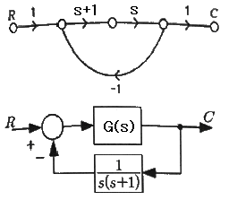
- s
- 1 / (s+1)
- 1
- s(s+1)
(정답률: 51%)
69. 다음은 직류전동기의 토크특성을 나타내는 그래프이다. (A), (B), (C), (D)에 알맞은 것은?
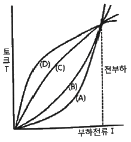
- (A) : 직권발전기, (B) : 가동복권발전기, (C) : 분권발전기, (D) : 차동복권발전기
- (A) : 분권발전기, (B) : 직권발전기, (C) : 가동복권발전기, (D) : 차동복권발전기
- (A) : 직권발전기, (B) : 분권발전기, (C) : 가동복권발전기, (D) : 차동복권발전기
- (A) : 분권발전기, (B) : 가동복권발전기, (C) : 직권발전기, (D) : 차동복권발전기
(정답률: 40%)
70. 서보기구의 특징에 관한 설명으로 틀린 것은?
- 원격제어의 경우가 많다.
- 제어량이 기계적 변위이다.
- 추치제어에 해당하는 제어장치가 많다.
- 신호는 아날로그에 비해 디지털인 경우가 많다.
(정답률: 53%)
71. SCR에 관한 설명으로 틀린 것은?
- PNPN 소자이다.
- 스위칭 소자이다.
- 양방향성 사이리스터이다.
- 직류나 교류의 전력제어용으로 사용된다.
(정답률: 63%)
72. 피드백 제어계에서 목표치를 기준입력신호로 바꾸는 역할을 하는 요소는?
- 비교부
- 조절부
- 조작부
- 설정부
(정답률: 37%)
73. 정현파 교류의 실효값(V)과 최대값(Vm)의 관계식으로 옳은 것은?
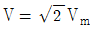
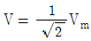
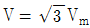
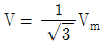
(정답률: 53%)
74. 적분시간이 2초, 비례감도가 5mA/mV인 PI조절계의 전달함수는?
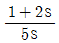
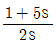
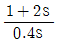
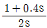
(정답률: 44%)
75. PLC(Programmable Logic Controller)의 출력부에 설치하는 것이 아닌 것은?
- 전자개폐기
- 열동계전기
- 시그널램프
- 솔레노이드밸브
(정답률: 52%)
76. 4000Ω 의 저항기 양단에 100V의 전압을 인가할 경우 흐르는 전류의 크기(mA)는?
- 4
- 15
- 25
- 40
(정답률: 55%)
77. 다음 설명에 알맞은 전기 관련 법칙은?
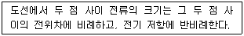
- 옴의 법칙
- 렌츠의 법칙
- 플레밍의 법칙
- 전압분배의 법칙
(정답률: 65%)
78. 그림과 같은 RLC 병렬공진회로에 관한 설명으로 틀린 것은?
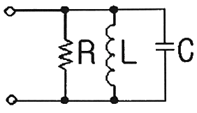
- 공진조건은 ωC = 1 / ωL 이다.
- 공진시 공진전류는 최소가 된다.
- R이 작을수록 선택도 Q가 높다.
- 공진시 입력 어드미턴스는 매우 작아진다.
(정답률: 40%)
79. 정상 편차를 개선하고 응답속도를 빠르게 하며 오버슈트를 감소시키는 동작은?
- K
- K(1+sT)
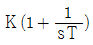
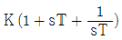
(정답률: 61%)
80. 특성방정식이 s3+2s2+Ks+5=0 인 제어계가 안정하기 위한 K 값은?
- K ＞ 0
- K ＜ 0
- K ＞
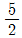
- K ＜

(정답률: 42%)
5과목: 배관일반
81. 냉매 배관 재료 중 암모니아를 냉매로 사용하는 냉동설비에 가장 적합한 것은?
- 동, 동합금
- 아연, 주석
- 철, 강
- 크롬, 니켈 합금
(정답률: 62%)
82. 배수관의 관경 선정 방법에 관한 설명으로 틀린 것은?
- 기구배수관의 관경은 배수트랩의 구경 이상으로 하고 최소 30 mm 정도로 한다.
- 수직, 수평관 모두 배수가 흐르는 방향으로 관경이 축소되어서는 안 된다.
- 배수수직관은 어느 층에서나 최하부의 가장 큰 배수부하를 담당하는 부분과 동일한 큰 배수부하를 담당하는 부분과 동일한 관경으로 한다.
- 땅속에 매설되는 배수관 최소 구경은 30mm 정도로 한다.
(정답률: 43%)
83. 급탕설비의 설계 및 시공에 관한 설명으로 틀린 것은?
- 중앙식 급탕방식은 개별식 급탕방식 보다 시공비가 많이 든다.
- 온수의 순환이 잘되고 공기가 고이는 것을 방지하기 위해 배관에 구배를 둔다.
- 게이트 밸브는 공기고임을 만들기 때문에 글로브 밸브를 사용한다.
- 순환방식은 순환펌프에 의한 강제순환식과 온수의 비중량 차이에 의한 중력식이 있다.
(정답률: 47%)
84. 다음 중 온수온도 90℃의 온수난방 배관의 보온재로 사용하기에 가장 부적합한 것은?
- 규산칼슘
- 펄라이트
- 암면
- 폴리스틸렌
(정답률: 53%)
85. 중기난방 배관 시공법에 대한 설명으로 틀린 것은?
- 중기주관에서 지관을 분기하는 경우 관의 팽창을 고려하여 스위블 이음법으로 한다.
- 진공환수식 배관의 증기주관은 1/100 ~ 1/200 선상향 구배로 한다.
- 주형방열기는 일반적으로 벽에서 50~60mm 정도 떨어지게 설치한다.
- 보일러 주변의 배관방법에서는 증기관과 환수관 사이에 밸런스관을 달고, 하트포드(hartford) 접속법을 사용한다.
(정답률: 48%)
86. 간접 가열식 급탕법에 관한 설명으로 틀린 것은?
- 대규모 급탕설비에 부적당하다.
- 순환증기는 높이에 관계 없이 저압으로 사용 가능하다.
- 저탕탱크와 가열용 코일이 설치되어 있다.
- 난방용 증기보일러가 있는 곳에 설치하면 설비비를 절약하고 관리가 편하다.
(정답률: 45%)
87. 급탕배관의 단락현상(sort circuit)을 방지할 수 있는 배관 방식은?
- 리버스 리턴 배관방식
- 다이렉트 리턴 배관방식
- 단관식 배관방식
- 상향식 배관방식
(정답률: 53%)
88. 도시가스배관 설비기준에서 배관을 시가지의 도로 노면 밑에 매설하는 경우에는 노면으로부터 배관의 외면까지 얼마 이상을 유지해야 하는가? (단, 방호구조물 안에 설치하는 경우는 제외한다.)
- 0.8 m
- 1 m
- 1.5 m
- 2 m
(정답률: 62%)
89. 관의 두께별 분류에서 가장 두꺼워 고압배관으로 사용할 수 있는 동관의 종류는?
- K형 동관
- S형 동관
- L형 동관
- N형 동관
(정답률: 58%)
90. 동관 이음 방법에 해당하지 않는 것은?
- 타이튼 이음
- 납땜 이음
- 압축 이음
- 플랜지 이음
(정답률: 53%)
91. 벤더에 의한 관 굽힘시 주름이 생겼다. 주된 원인은?
- 재료에 결함이 있다.
- 굽힘형의 홈이 관지름 보다 작다.
- 클램프 또는 관에 기름이 묻어 있다.
- 압력형이 조정이 세고 저항이 크다.
(정답률: 61%)
92. 공조배관 설계시 유속을 빠르게 했을 경우의 현상으로 틀린 것은?
- 관경이 작아진다.
- 운전비가 감소한다.
- 소음이 발생된다.
- 마찰손실이 증대한다.
(정답률: 60%)
93. 증기난방 설비의 특징에 대한 설명으로 틀린 것은?
- 증발열을 이용하므로 열의 운반능력이 크다.
- 예열시간이 온수난방에 비해 짧고 증기순환이 빠르다.
- 방열면적을 온수난방보다 적게 할 수 있다.
- 실내 상하온도차가 작다.
(정답률: 57%)
94. 냉매배관 시공 시 주의사항으로 틀린 것은?
- 배관 길이는 되도록 짧게 한다.
- 온도변화에 의한 신축을 고려한다.
- 곡률 반지름은 가능한 작게 한다.
- 수평배관은 냉매흐름 방향으로 하향구배 한다.
(정답률: 69%)
95. 다음 중 “접속해 있을 때”를 나타내는 관의 도시기호는?
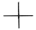
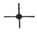
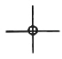
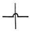
(정답률: 66%)
96. 고가수조식 급수방식의 장점이 아닌 것은?
- 급수압력이 일정하다.
- 단수 시에도 일정량의 급수가 가능하다.
- 급수 공급계통에서 물의 오염 가능성이 없다.
- 대규모 급수에 적합하다.
(정답률: 68%)
97. 증발량 5000 kg/h인 보일러의 증기 엔탈피가 640 kcal/kg이고, 급수 엔탈피가 15 kcal/kg 일 때, 보일러의 상당 증발량(kg/h)은?
- 278
- 4800
- 5797
- 3125000
(정답률: 24%)
98. 냉동 장치의 배관설치에 관한 내용으로 틀린 것은?
- 토출가스의 합류 부분 배관은 T 이음으로 한다.
- 압축기와 응축기의 수평배관은 하향 구배로 한다.
- 토출가스 배관에는 역류방지 밸브를 설치한다.
- 토출관의 입상이 10m 이상일 경우 10m 마다 중간 트랩을 설치한다.
(정답률: 56%)
99. 증기 및 물배관 등에서 찌꺼기를 제거하기 위하여 설치하는 부속품은?
- 유니온
- P트랩
- 부싱
- 스트레이너
(정답률: 65%)
100. 가스 배관재료 중 내약품성 및 전기 절연성이 우수하며 사용온도가 80℃이하인 관은?
- 주철관
- 강관
- 동관
- 폴리에틸렌관
(정답률: 57%)